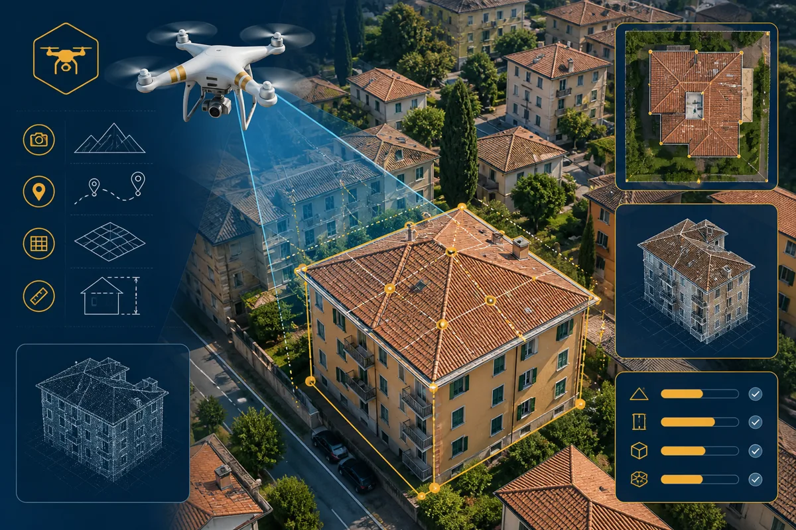
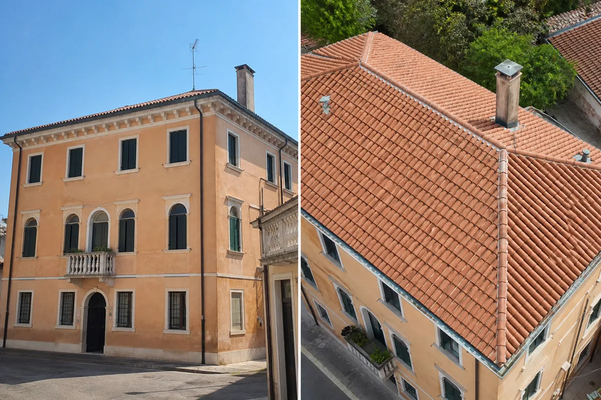
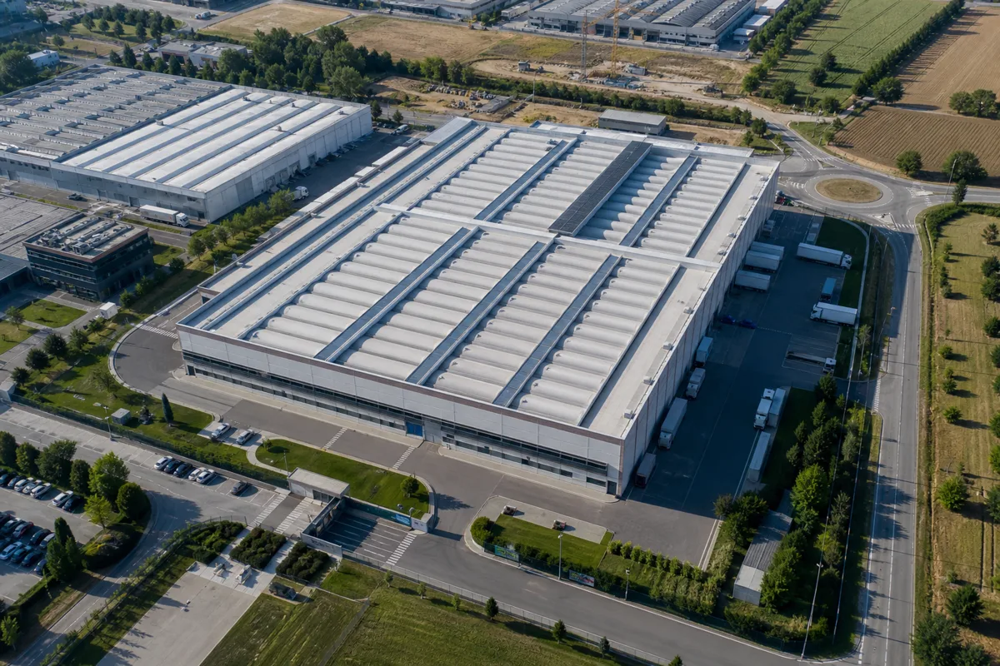

Sopralluoghi drone 4K
a Padova e provincia
Non vendiamo un drone. Forniamo una nuova prospettiva sul tuo immobile, sul tuo capannone o sul tuo cantiere: ispezioni visive, sopralluoghi aerei e riprese 4K coordinate da Righetto Immobiliare con operatori specializzati.
Ultimo aggiornamento: agosto 2026

Quando la vista da terra non basta
Prima di investire in ponteggi, scale o interventi costosi, molti proprietari e professionisti si trovano di fronte a domande che solo una prospettiva diversa può aiutare a chiarire.
- Come verifico lo stato della copertura senza salire sul tetto o montare un ponteggio?
- Il acquirente riesce a capire davvero l'estensione del giardino, del parcheggio o del terreno circostante?
- Il capannone ha problemi visibili solo dall'alto — grondaie, pannelli, coperture o aree logistiche?
- Come documento l'avanzamento del cantiere per il committente senza essere sempre in loco?
- Le foto da terra mostrano l'immobile, ma non il contesto urbanistico o la posizione rispetto ai servizi?
- Devo presentare un immobile di pregio e voglio un materiale che racconti spazi, volumi e panorama in modo professionale?
Un processo chiaro in 5 passaggi
Dal primo contatto alla consegna del materiale: un flusso semplice, con valutazione preliminare e tempi concordati in anticipo.
Cinque ambiti, una prospettiva nuova
Ogni incarico viene definito su misura in base alla struttura, alla zona e all'obiettivo del cliente.
Approfondisci nel nostro articolo: Sopralluoghi drone a Padova — guida 2026.
Da terra vedi una parte.
Dall'alto puoi vedere l'insieme.
La differenza non è solo estetica: cambia ciò che riesci a valutare, comunicare e decidere.


Cinque vantaggi concreti per te
Uno strumento di documentazione che integra — non sostituisce — sopralluoghi tradizionali e valutazioni tecniche.
Vedere l'industria da una nuova prospettiva
Capannoni, stabilimenti e aree logistiche hanno dimensioni e criticità che difficilmente si coglie con poche foto da terra. Un sopralluogo aereo documenta coperture, facciate, piazzali, accessi carrabili e rapporto con le infrastrutture circostanti.
Il servizio è utile a proprietari, gestori, tecnici e investitori che devono valutare lo stato visivo di un asset, preparare report interni o presentare un immobile produttivo con materiale professionale.
Per valutazioni di mercato e perizie immobiliari su capannoni e immobili commerciali, integra il servizio con la nostra consulenza valutativa.
Un immobile non si mostra.
Si racconta.
"Non vendiamo un drone. Forniamo una nuova prospettiva."
Per ville, abitazioni con ampi spazi esterni e condomini, le riprese aeree completano foto e tour interni mostrando giardino, pertinenze, panorama e posizione nel contesto urbano o collinare.
Il materiale può integrare la strategia di vendita immobiliare Righetto: annunci più efficaci, presentazioni per acquirenti selezionati e documentazione utile in fase di valutazione preliminare.
Hai domande specifiche? Contattaci per capire se il servizio è adatto al tuo immobile.
Operatività prudente e regolamentata
Ogni intervento viene valutato caso per caso. Non promettiamo voli in condizioni non consentite o in aree con vincoli non verificati.
Il servizio è svolto da operatori professionali nel rispetto della normativa ENAC e delle disposizioni applicabili alla circolazione di aeromobili a pilotaggio remoto, incluse le categorie operative previste dal regolamento europeo e dalle integrazioni nazionali.
Prima di ogni missione effettuiamo una valutazione preliminare del sito: tipologia di area, presenza di vincoli, distanze da terzi e requisiti eventualmente necessari. In alcune zone del Veneto possono applicarsi restrizioni operative: te lo comunichiamo in fase di preventivo.
La documentazione prodotta ha finalità visiva e informativa. Non costituisce certificazione tecnica, collaudo strutturale, diagnosi energetica o perizia immobiliare.
Per accertamenti che richiedono responsabilità professionale specifica — statica, impermeabilizzazione, conformità urbanistica — è necessario affidarsi a tecnici abilitati. Il nostro servizio può supportare la fase preliminare con materiale oggettivo e aggiornato.
Sopralluoghi drone a Padova: le risposte
Le domande più comuni su costi, tempi, coperture, cantieri e ambito del servizio.
Quanto costa un sopralluogo con drone a Padova?▼
Il costo dipende da tipo di struttura, estensione dell'area, numero di riprese e tempi di consegna. Non pubblichiamo listini online: compila il modulo o contattaci per un preventivo personalizzato senza impegno.
Il drone può ispezionare il tetto senza ponteggi?▼
Sì, consente di documentare visivamente coperture, grondaie e parti alte difficili da raggiungere da terra. È una prima valutazione documentata, non una diagnosi strutturale certificata da tecnico abilitato.
Cosa ricevo al termine del servizio?▼
Materiale fotografico e/o video in alta risoluzione, selezione di inquadrature utili e file pronti per report, annunci o presentazioni. Formati e tempi di consegna vengono concordati nel preventivo.
Le riprese sono in 4K?▼
Sì, utilizziamo equipaggiamento professionale in grado di acquisire riprese aeree fino alla risoluzione 4K, con stabilizzazione e ottiche adatte a documentare dettagli architettonici e grandi superfici.
Quanto dura un sopralluogo con drone?▼
In loco, da circa 30 minuti per un'abitazione standard a alcune ore per capannoni o cantieri estesi. La post-produzione e la consegna del materiale hanno tempi definiti nel preventivo.
Potete documentare capannoni industriali?▼
Sì, realizziamo sopralluoghi su capannoni, stabilimenti e aree logistiche. Accessibilità e requisiti operativi vengono valutati prima di confermare l'intervento.
È possibile monitorare un cantiere?▼
Sì, con riprese periodiche o spot per documentare l'avanzamento lavori. Frequenza e ambito vanno concordati in sede in base alle esigenze del committente o della direzione lavori.
Il sopralluogo drone sostituisce una perizia?▼
No. Fornisce documentazione visiva utile a supportare decisioni preliminari e comunicazione. Per perizie, stime di mercato e accertamenti tecnici affidati a professionisti abilitati — come la nostra consulenza valutativa.
Operate in tutte le zone di Padova e provincia?▼
Copriamo Padova, provincia e aree del Veneto su richiesta. Alcune zone possono avere restrizioni operative: effettuiamo una valutazione preliminare prima di confermare data e ambito dell'intervento.
Come richiedo un preventivo?▼
Compila il modulo in fondo alla pagina con comune, tipo di struttura e servizio richiesto, oppure chiamaci al 049.8843484. Ti rispondiamo con tempi indicativi e preventivo senza impegno.
Chi esegue i voli con drone?▼
Righetto Immobiliare coordina il servizio con operatori professionali specializzati. Non vendiamo un drone: forniamo una nuova prospettiva documentata sul tuo immobile o sul tuo sito, nel rispetto delle normative applicabili.
Richiedi il tuo sopralluogo
Indicaci comune, tipo di struttura e obiettivo del servizio. Ti rispondiamo con tempi, ambito e preventivo personalizzato — senza listini online e senza impegno.
Richiedi un
sopralluogo drone
Compila il modulo con i dati della struttura e il tipo di servizio richiesto. Valutiamo fattibilità, tempi e preventivo in base a comune e obiettivo del sopralluogo.
Leggi anche: guida ai sopralluoghi drone a Padova.
Richiedi sopralluogo drone
Rispondiamo entro 24 ore — nessun impegno